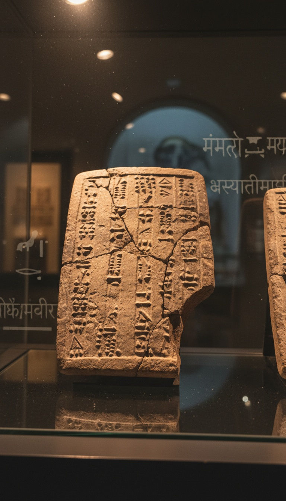

Five civilizations that never met wrote the same creation story. Void. Primordial water. Earth split from sky. Man shaped from clay. The sequence repeats across three millennia, four language families, and three continents.
Anthropologists call it a universal archetype. I think the pattern is too specific for that word to do the work it is being asked to do.

The Sumerian Tablet That Started the Pattern
The Enuma Elish was inscribed on seven clay tablets recovered by Austen Henry Layard in 1849 from the ruins of Ashurbanipal's library at Nineveh. The tablets are dated to roughly 1750 BCE and now sit in the British Museum under registration numbers K.3473 and K.5419.
The opening lines describe a state before existence. No sky named above. No earth named below. Only Apsu, the freshwater, and Tiamat, the saltwater, mingling as one body. From that water, gods emerge. From the corpse of Tiamat, the sky and the earth are split apart. From the blood of the slain god Kingu, mixed with clay, the first man is formed.
Void. Water. Separation. Clay. Four steps, fixed order.
Genesis Repeats the Sequence Word for Word
The Hebrew Book of Genesis, compiled in its current form between 600 and 500 BCE according to Richard Elliott Friedman's documentary analysis, opens with the earth formless and void. The Spirit of God moves over the face of the waters. God divides the waters above from the waters below. God forms man from the dust of the ground.
The Dead Sea Scroll fragment 4QGenesis, housed in the Israel Museum in Jerusalem, preserves this exact sequence in Hebrew dating to the second century BCE. The Hebrew word for the void, tohu wa-bohu, has no clean cognate in surrounding Semitic literature outside the Mesopotamian sphere.
Same four steps. Same order. Different language.
The Rigveda Says It in Sanskrit
The Nasadiya Sukta, Rigveda 10.129, is dated by Michael Witzel of Harvard to roughly 1500 BCE based on linguistic stratification. The hymn opens with neither existence nor non-existence. No air, no sky beyond it. Then darkness hidden by darkness, and an undistinguished sea.
From that sea, heat is born. From heat, desire. From desire, the separation of being from non-being. The Purusha Sukta, Rigveda 10.90, then describes the first cosmic man dismembered to form the world, and humanity shaped from his substance.
Three thousand years. Five languages. The same four moves in the same order. Either every culture independently dreamed the identical dream, or someone is remembering something.
The Prose Edda Tells It in Old Norse
Snorri Sturluson wrote the Prose Edda in Iceland around 1220 CE, but he was transcribing oral material that Georges Dumezil and other comparativists trace to Proto-Indo-European strata predating any contact with Mediterranean texts. The manuscript known as the Codex Regius sits in the Arnamagnaean Institute in Reykjavik.
The Gylfaginning section opens with Ginnungagap, the yawning void. Then the meeting of fire and ice produces meltwater. From the meltwater rises Ymir, the primordial giant, whose body is then split by Odin, Vili, and Ve to form the earth below and the sky above. The first humans, Ask and Embla, are shaped from driftwood found on a shore.
Norse trade contact with Mesopotamia or Egypt is unattested before 800 CE. The structural match is older than any plausible borrowing route.
Khnum on the Potter's Wheel
The Egyptian creation tradition centered at Elephantine and recorded on the walls of the Temple of Esna, north of Aswan, shows the ram-headed god Khnum forming humanity on a potter's wheel from Nile clay. The Esna reliefs date to the Ptolemaic and Roman periods but reproduce iconography found on the Palermo Stone, dated to the Fifth Dynasty, roughly 2400 BCE.
The Heliopolitan cosmogony, preserved on the Shabaka Stone in the British Museum, registration EA498, opens with Nun, the primordial water. From Nun rises Atum on the primeval mound. Atum separates Shu, the air, from Tefnut, the moisture, which then separates Geb, the earth, from Nut, the sky.
Void. Water. Separation. Clay. The same four steps, in Egypt, before the Sumerian tablets were even inscribed.
The Diffusion Argument Falls Apart
Standard anthropology answers this with diffusion or with Jungian archetype. Diffusion requires a contact route. Sumerian to Hebrew is plausible through Babylonian exile. Sumerian to Vedic Sanskrit has no documented contact corridor before 500 BCE. Sumerian to Old Norse has no corridor at all. Egyptian to Vedic has no corridor.
Carl Jung's archetype theory, advanced in his 1934 essay The Archetypes and the Collective Unconscious, predicts thematic resonance, not identical four-step sequences in fixed order. A void followed by water followed by separation followed by clay-formed humans is too specific to be a Rorschach pattern.
Walter Burkert, in The Orientalizing Revolution published by Harvard University Press in 1992, conceded the structural identity but punted on the mechanism. The mechanism is the part nobody wants to name.
If five cultures with no shared ancestor inscribed the same four-step creation sequence into their oldest sacred texts, then one of two things is true. Either human cognition is so constrained that we cannot imagine cosmogony any other way, which contradicts every other domain of mythology where invention runs wild. Or the story predates all five cultures and was carried forward from a source none of them remembered clearly enough to name.
The Sumerians said they received their knowledge from beings who came before the flood. The Egyptians said the same. The Vedic tradition speaks of a prior age. The Norse remembered a world before this one. The Hebrews preserved a flood that ended an earlier humanity.
Five cultures. One memory. What were they all trying not to forget?
Before you go
7 books the Vatican doesn't want you reading. Free PDF — the texts they cut, with sources. Joined by 140+ Inner Circle members.
No spam. Unsubscribe anytime.
Go deeper
The Hidden Canon, Vol. I — Enoch. Jubilees. Thomas. Mary. Judas. 90 pages, 14 chapters, every receipt cited. The books your Bible quietly removed.
Read the Canon →Books that informed this investigation
As an Amazon Associate, Hidden Epoch earns from qualifying purchases. Cost to you: nothing.
Research safely
The VPN we use to research without being tracked. First 3 months free.
Get NordVPN →